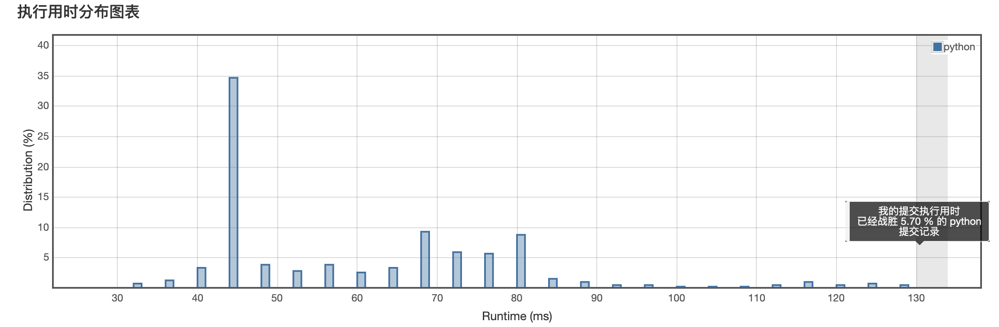

<!DOCTYPE html>
<html>
<head><meta name="generator" content="Hexo 3.8.0">
  <meta charset="utf-8">
  
  <title>Aloha | Gaga酱的奇思妙想</title>
  <meta name="viewport" content="width=device-width, initial-scale=1, maximum-scale=1">
  
    <meta name="keywords" content="萌萌の嘎嘎">
  
  
  
  
  <meta name="description" content="小李飞刀！例无虚发！">
<meta name="keywords" content="leetcode,python">
<meta property="og:type" content="article">
<meta property="og:title" content="小李飞刀：做题第十一弹！">
<meta property="og:url" content="http://yoursite.com/2019/04/17/小李飞刀：做题第十一弹！/index.html">
<meta property="og:site_name" content="Gaga酱の奇思妙想">
<meta property="og:description" content="小李飞刀！例无虚发！">
<meta property="og:locale" content="zh-Hans">
<meta property="og:image" content="http://yoursite.com/2019/04/17/小李飞刀：做题第十一弹！/1.png">
<meta property="og:image" content="http://yoursite.com/2019/04/17/小李飞刀：做题第十一弹！/2.png">
<meta property="og:image" content="http://yoursite.com/2019/04/17/小李飞刀：做题第十一弹！/3.png">
<meta property="og:image" content="http://yoursite.com/2019/04/17/小李飞刀：做题第十一弹！/4.png">
<meta property="og:image" content="http://yoursite.com/2019/04/17/小李飞刀：做题第十一弹！/5.png">
<meta property="og:image" content="http://yoursite.com/2019/04/17/小李飞刀：做题第十一弹！/6.png">
<meta property="og:image" content="http://yoursite.com/2019/04/17/小李飞刀：做题第十一弹！/7.png">
<meta property="og:image" content="http://yoursite.com/2019/04/17/小李飞刀：做题第十一弹！/8.png">
<meta property="og:image" content="http://yoursite.com/2019/04/17/小李飞刀：做题第十一弹！/9.png">
<meta property="og:image" content="http://yoursite.com/2019/04/17/小李飞刀：做题第十一弹！/10.png">
<meta property="og:image" content="http://yoursite.com/2019/04/17/小李飞刀：做题第十一弹！/11.png">
<meta property="og:image" content="http://yoursite.com/2019/04/17/小李飞刀：做题第十一弹！/12.png">
<meta property="og:image" content="http://yoursite.com/2019/04/17/小李飞刀：做题第十一弹！/13.png">
<meta property="og:image" content="http://yoursite.com/2019/04/17/小李飞刀：做题第十一弹！/14.png">
<meta property="og:image" content="http://yoursite.com/2019/04/17/小李飞刀：做题第十一弹！/15.png">
<meta property="og:image" content="http://yoursite.com/2019/04/17/小李飞刀：做题第十一弹！/16.png">
<meta property="og:image" content="http://yoursite.com/2019/04/17/小李飞刀：做题第十一弹！/17.png">
<meta property="og:image" content="http://yoursite.com/2019/04/17/小李飞刀：做题第十一弹！/18.png">
<meta property="og:image" content="http://yoursite.com/2019/04/17/小李飞刀：做题第十一弹！/19.png">
<meta property="og:image" content="http://yoursite.com/2019/04/17/小李飞刀：做题第十一弹！/20.png">
<meta property="og:image" content="http://yoursite.com/2019/04/17/小李飞刀：做题第十一弹！/21.png">
<meta property="og:updated_time" content="2019-09-24T15:20:41.528Z">
<meta name="twitter:card" content="summary">
<meta name="twitter:title" content="小李飞刀：做题第十一弹！">
<meta name="twitter:description" content="小李飞刀！例无虚发！">
<meta name="twitter:image" content="http://yoursite.com/2019/04/17/小李飞刀：做题第十一弹！/1.png">
  
  <link rel="icon" href="/css/images/favicon.png">
  
    <link href="//fonts.googleapis.com/css?family=Source+Code+Pro" rel="stylesheet" type="text/css">
  
  <link href="https://fonts.googleapis.com/css?family=Open+Sans|Montserrat:700" rel="stylesheet" type="text/css">
  <link href="https://fonts.googleapis.com/css?family=Roboto:400,300,300italic,400italic" rel="stylesheet" type="text/css">
  <link href="//cdn.bootcss.com/font-awesome/4.6.3/css/font-awesome.min.css" rel="stylesheet">
  <style type="text/css">
    @font-face{font-family:futura-pt;src:url(https://use.typekit.net/af/9749f0/00000000000000000001008f/27/l?subset_id=2&fvd=n5) format("woff2");font-weight:500;font-style:normal;}
    @font-face{font-family:futura-pt;src:url(https://use.typekit.net/af/90cf9f/000000000000000000010091/27/l?subset_id=2&fvd=n7) format("woff2");font-weight:500;font-style:normal;}
    @font-face{font-family:futura-pt;src:url(https://use.typekit.net/af/8a5494/000000000000000000013365/27/l?subset_id=2&fvd=n4) format("woff2");font-weight:lighter;font-style:normal;}
    @font-face{font-family:futura-pt;src:url(https://use.typekit.net/af/d337d8/000000000000000000010095/27/l?subset_id=2&fvd=i4) format("woff2");font-weight:400;font-style:italic;}</style>
    
  <link rel="stylesheet" id="athemes-headings-fonts-css" href="//fonts.googleapis.com/css?family=Yanone+Kaffeesatz%3A200%2C300%2C400%2C700&amp;ver=4.6.1" type="text/css" media="all">

  <link rel="stylesheet" id="athemes-headings-fonts-css" href="//fonts.googleapis.com/css?family=Oswald%3A300%2C400%2C700&amp;ver=4.6.1" type="text/css" media="all">
  <link rel="stylesheet" href="/css/style.css">

  <script src="/js/jquery-3.1.1.min.js"></script>

  <!-- Bootstrap core CSS -->
  <link rel="stylesheet" href="/css/bootstrap.css">
  <link rel="stylesheet" href="/css/fashion.css">
  <link rel="stylesheet" href="/css/glyphs.css">
  <!-- Global site tag (gtag.js) - Google Analytics -->
  <script async src="https://www.googletagmanager.com/gtag/js?id=UA-142486934-1"></script>
  <script>
    window.dataLayer = window.dataLayer || [];
    function gtag(){dataLayer.push(arguments);}
    gtag('js', new Date());

    gtag('config', 'UA-142486934-1');
  </script>


</head>
</html>


  <body data-spy="scroll" data-target="#toc" data-offset="50">


  


<header id="allheader" class="site-header" role="banner">
  <div class="clearfix container">
      <div class="site-branding">

          <h3 class="site-title">
            
              <a href="/" title="Gaga酱の奇思妙想" rel="home"> Gaga酱の奇思妙想 </a>
            
          </h3>
          
          
            <div class="site-description">深水静流</div>
          
            
          <nav id="main-navigation" class="main-navigation" role="navigation">
            <a class="nav-open">Menu</a>
            <a class="nav-close">Close</a>

            <div class="clearfix sf-menu">
              <ul id="main-nav" class="menu sf-js-enabled sf-arrows" style="touch-action: pan-y;">
                    
                      <li class="menu-item menu-item-type-custom menu-item-object-custom menu-item-home menu-item-1663"> <a class href="/">冲鸭❤</a> </li>
                    
                      <li class="menu-item menu-item-type-custom menu-item-object-custom menu-item-home menu-item-1663"> <a class href="/archives">archives❤</a> </li>
                    
                      <li class="menu-item menu-item-type-custom menu-item-object-custom menu-item-home menu-item-1663"> <a class href="/categories">碎碎念的基本法❤</a> </li>
                    
                      <li class="menu-item menu-item-type-custom menu-item-object-custom menu-item-home menu-item-1663"> <a class href="/tags">tags❤</a> </li>
                    
                      <li class="menu-item menu-item-type-custom menu-item-object-custom menu-item-home menu-item-1663"> <a class href="/about">岁月如歌❤</a> </li>
                    
                      <li class="menu-item menu-item-type-custom menu-item-object-custom menu-item-home menu-item-1663"> <a class href="/books">阅❤</a> </li>
                    
                      <li class="menu-item menu-item-type-custom menu-item-object-custom menu-item-home menu-item-1663"> <a class href="/movies">影❤</a> </li>
                    
              </ul>
            </div>
          </nav>

      </div>
  </div>
</header>


  <div id="container">
    <div id="wrap">
            
      <div id="content" class="outer">
        
          <section id="main" style="float:none;"><article id="post-小李飞刀：做题第十一弹！" style="width: 66%; float:left;" class="article article-type-post" itemscope itemprop="blogPost">
  <div id="articleInner" class="clearfix post-1016 post type-post status-publish format-standard has-post-thumbnail hentry category-template-2 category-uncategorized tag-codex tag-edge-case tag-featured-image tag-image tag-template">
    
    
      <header class="article-header">
        
  
    <h1 class="thumb" itemprop="name">
      小李飞刀：做题第十一弹！
    </h1>
  

      </header>
    
    <div class="article-meta">
      
	<a href="/2019/04/17/小李飞刀：做题第十一弹！/" class="article-date">
	  <time datetime="2019-04-17T14:36:37.000Z" itemprop="datePublished">April 17, 2019</time>
	</a>

      
	<span class="ico-folder"></span>
    <a class="article-category-link" href="/categories/小李の放学后/">小李の放学后</a>
 
      
    </div>
    <div class="article-entry" itemprop="articleBody">
      
        <p></p>
<h4 id="写在前面"><a href="#写在前面" class="headerlink" title="写在前面"></a>写在前面</h4><p>最近忙着调教新装备，没有及时的写题解，但是没有在偷懒没刷题喔~<br>来认真整理下最近做的题目~</p>
<p>之前考虑按<code>tag</code>来刷题，后来收到了推荐的<code>leetcode题解</code>，就根据上面的说明陆续刷题啦~<br>tag主要做了：数组、双指针<br>找时间要开始部署<code>gitbook</code>了，然后将题解部署到电子书上~</p>
<h4 id="认真做题的分割线"><a href="#认真做题的分割线" class="headerlink" title="认真做题的分割线"></a>认真做题的分割线</h4><h5 id="第一题"><a href="#第一题" class="headerlink" title="第一题"></a>第一题</h5><p><strong><a href="https://leetcode-cn.com/problems/first-unique-character-in-a-string/" target="_blank" rel="noopener">387. 字符串中的第一个唯一字符</a></strong><br><strong>难度：简单</strong><br>给定一个字符串，找到它的第一个不重复的字符，并返回它的索引。如果不存在，则返回<code>-1</code>。</p>
<blockquote>
<p><strong>案例</strong>:<br>s = “leetcode”<br>返回 0.<br>s = “loveleetcode”,<br>返回 2.</p>
</blockquote>
<p><strong>我的题解：</strong><br><figure class="highlight python"><table><tr><td class="code"><pre><span class="line"><span class="class"><span class="keyword">class</span> <span class="title">Solution</span><span class="params">(object)</span>:</span></span><br><span class="line">    <span class="function"><span class="keyword">def</span> <span class="title">firstUniqChar</span><span class="params">(self, s)</span>:</span></span><br><span class="line">        <span class="string">"""</span></span><br><span class="line"><span class="string">        :type s: str</span></span><br><span class="line"><span class="string">        :rtype: int</span></span><br><span class="line"><span class="string">        """</span></span><br><span class="line">        mapa = dict()</span><br><span class="line">        <span class="keyword">for</span> i <span class="keyword">in</span> s:</span><br><span class="line">            <span class="keyword">if</span> i <span class="keyword">not</span> <span class="keyword">in</span> mapa:</span><br><span class="line">                mapa[i] = <span class="number">1</span></span><br><span class="line">            <span class="keyword">else</span>:</span><br><span class="line">                mapa[i] += <span class="number">1</span></span><br><span class="line">        <span class="keyword">for</span> j <span class="keyword">in</span> range(len(s)):</span><br><span class="line">            a = s[j]</span><br><span class="line">            <span class="keyword">if</span> a <span class="keyword">in</span> mapa <span class="keyword">and</span> mapa[a] == <span class="number">1</span>:</span><br><span class="line">                <span class="keyword">return</span> j</span><br><span class="line">        <span class="keyword">return</span> <span class="number">-1</span></span><br></pre></td></tr></table></figure></p>
<p></p>
<p><strong>我的思路：</strong><br>做两次循环，第一次循环用来做映射表，用hash表可以快速查询。<br>第二遍从头检查，在hash表中仅出现一次的字母，即最早不重复的字母。</p>
<h5 id="第二题"><a href="#第二题" class="headerlink" title="第二题"></a>第二题</h5><p><strong><a href="https://leetcode-cn.com/problems/move-zeroes/" target="_blank" rel="noopener">283. 移动零</a></strong><br><strong>难度：简单</strong><br>给定一个数组 nums，编写一个函数将所有<code>0</code>移动到数组的末尾，同时保持非零元素的相对顺序。</p>
<blockquote>
<p><strong>案例</strong>:<br>输入: [0,1,0,3,12]<br>输出: [1,3,12,0,0]<br>返回 2.</p>
</blockquote>
<p><strong>我的题解：</strong><br><figure class="highlight python"><table><tr><td class="code"><pre><span class="line"><span class="class"><span class="keyword">class</span> <span class="title">Solution</span><span class="params">(object)</span>:</span></span><br><span class="line">    <span class="function"><span class="keyword">def</span> <span class="title">moveZeroes</span><span class="params">(self, nums)</span>:</span></span><br><span class="line">        <span class="string">"""</span></span><br><span class="line"><span class="string">        :type nums: List[int]</span></span><br><span class="line"><span class="string">        :rtype: None Do not return anything, modify nums in-place instead.</span></span><br><span class="line"><span class="string">        """</span></span><br><span class="line">        l = len(nums)</span><br><span class="line">        j = <span class="number">0</span></span><br><span class="line">        <span class="keyword">for</span> i <span class="keyword">in</span> range(l):</span><br><span class="line">            <span class="keyword">if</span> nums[i] !=<span class="number">0</span>:</span><br><span class="line">                nums[j] = nums[i]</span><br><span class="line">                j +=<span class="number">1</span></span><br><span class="line">        nums[j:l] = [<span class="number">0</span> <span class="keyword">for</span> i <span class="keyword">in</span> range(l-j)]</span><br></pre></td></tr></table></figure></p>
<p></p>
<p><strong>我的思路：</strong><br>从头遍历数组，如果对应数组的值不为0，则利用慢指针，将非零项向前移动归并。<br>最后一个非零项对应的索引到数组的最后则被0包围了~</p>
<h5 id="第三题"><a href="#第三题" class="headerlink" title="第三题"></a>第三题</h5><p><strong><a href="https://leetcode-cn.com/problems/missing-number/" target="_blank" rel="noopener">268. 缺失数字</a></strong><br><strong>难度：简单</strong><br>给定一个包含<code>0, 1, 2, ..., n</code>中 n 个数的序列，找出 0 .. n 中没有出现在序列中的那个数。</p>
<blockquote>
<p><strong>案例</strong>:<br>输入: [3,0,1]<br>输出: 2<br>输入: [9,6,4,2,3,5,7,0,1]<br>输出: 8</p>
</blockquote>
<p><strong>我的题解：</strong><br><figure class="highlight python"><table><tr><td class="code"><pre><span class="line"><span class="class"><span class="keyword">class</span> <span class="title">Solution</span><span class="params">(object)</span>:</span></span><br><span class="line">    <span class="function"><span class="keyword">def</span> <span class="title">missingNumber</span><span class="params">(self, nums)</span>:</span></span><br><span class="line">        <span class="string">"""</span></span><br><span class="line"><span class="string">        :type nums: List[int]</span></span><br><span class="line"><span class="string">        :rtype: int</span></span><br><span class="line"><span class="string">        """</span></span><br><span class="line">        sum = <span class="number">0</span></span><br><span class="line">        l =len(nums)</span><br><span class="line">        sum_a = (<span class="number">1</span>+l)*l/<span class="number">2</span></span><br><span class="line">        <span class="keyword">for</span> i <span class="keyword">in</span> nums:</span><br><span class="line">            sum += i</span><br><span class="line">        <span class="keyword">return</span> sum_a - sum</span><br></pre></td></tr></table></figure></p>
<p><br><strong>我的思路：</strong><br>缺少的值 = 未缺失数的序列综合 - 当前的序列总和</p>
<h5 id="第四题"><a href="#第四题" class="headerlink" title="第四题"></a>第四题</h5><p><strong><a href="https://leetcode-cn.com/problems/majority-element-ii/" target="_blank" rel="noopener">229. 求众数 II</a></strong><br><strong>难度：简单</strong><br>给定一个大小为 n 的数组，找出其中所有出现超过<code>⌊ n/3 ⌋</code>次的元素。</p>
<p>说明: 要求算法的时间复杂度为<code>O(n)</code>，空间复杂度为<code>O(1)</code>。</p>
<blockquote>
<p><strong>案例</strong>:<br>输入: [3,2,3]<br>输出: <a href="https://leetcode-cn.com/problems/missing-number/" target="_blank" rel="noopener">3</a><br>输入: [1,1,1,3,3,2,2,2]<br>输出: [1,2]</p>
</blockquote>
<p><strong>我的题解：</strong><br><figure class="highlight python"><table><tr><td class="code"><pre><span class="line"><span class="class"><span class="keyword">class</span> <span class="title">Solution</span><span class="params">(object)</span>:</span></span><br><span class="line">    <span class="function"><span class="keyword">def</span> <span class="title">majorityElement</span><span class="params">(self, nums)</span>:</span></span><br><span class="line">        <span class="string">"""</span></span><br><span class="line"><span class="string">        :type nums: List[int]</span></span><br><span class="line"><span class="string">        :rtype: List[int]</span></span><br><span class="line"><span class="string">        """</span> </span><br><span class="line">        a = dict()</span><br><span class="line">        b = list()</span><br><span class="line">        n = len(nums) / <span class="number">3</span></span><br><span class="line">        <span class="keyword">for</span> i <span class="keyword">in</span> nums:</span><br><span class="line">            <span class="keyword">if</span> i <span class="keyword">not</span> <span class="keyword">in</span> a:</span><br><span class="line">                a[i] = <span class="number">1</span></span><br><span class="line">            <span class="keyword">else</span>:</span><br><span class="line">                a[i] += <span class="number">1</span></span><br><span class="line">        <span class="keyword">for</span> j <span class="keyword">in</span> a:</span><br><span class="line">            <span class="keyword">if</span> a[j] &gt; n:</span><br><span class="line">                b.append(j)</span><br><span class="line">        <span class="keyword">return</span> b</span><br></pre></td></tr></table></figure></p>
<p></p>
<p><strong>我的思路：</strong><br>同第一题的思路一致，两次循环，第一次检查每个数的重复情况。<br>第二遍循环用于找出对应的值。</p>
<h5 id="第五题"><a href="#第五题" class="headerlink" title="第五题"></a>第五题</h5><p><strong><a href="https://leetcode-cn.com/problems/symmetric-tree/" target="_blank" rel="noopener">101. 对称二叉树</a></strong><br><strong>难度：简单</strong><br>给定一个二叉树，检查它是否是镜像对称的。<br>例如，二叉树<code>[1,2,2,3,4,4,3]</code>是对称的。<br>但是下面这个<code>[1,2,2,null,3,null,3]</code>则不是镜像对称的:</p>
<p><strong>我的题解：</strong><br><figure class="highlight python"><table><tr><td class="code"><pre><span class="line"><span class="comment"># Definition for a binary tree node.</span></span><br><span class="line"><span class="comment"># class TreeNode(object):</span></span><br><span class="line"><span class="comment">#     def __init__(self, x):</span></span><br><span class="line"><span class="comment">#         self.val = x</span></span><br><span class="line"><span class="comment">#         self.left = None</span></span><br><span class="line"><span class="comment">#         self.right = None</span></span><br><span class="line"></span><br><span class="line"><span class="class"><span class="keyword">class</span> <span class="title">Solution</span><span class="params">(object)</span>:</span></span><br><span class="line">    <span class="function"><span class="keyword">def</span> <span class="title">isSymmetric</span><span class="params">(self, root)</span>:</span></span><br><span class="line">        <span class="string">"""</span></span><br><span class="line"><span class="string">        :type root: TreeNode</span></span><br><span class="line"><span class="string">        :rtype: bool</span></span><br><span class="line"><span class="string">        """</span></span><br><span class="line">        <span class="keyword">if</span> <span class="keyword">not</span> root:</span><br><span class="line">            <span class="keyword">return</span> <span class="literal">True</span></span><br><span class="line">        <span class="keyword">return</span> self.isSame(root.left,root.right)</span><br><span class="line">    </span><br><span class="line">    <span class="function"><span class="keyword">def</span> <span class="title">isSame</span><span class="params">(self,leftNode,rightNode)</span>:</span></span><br><span class="line">        <span class="keyword">if</span> leftNode == <span class="literal">None</span>:</span><br><span class="line">            <span class="keyword">return</span> rightNode == <span class="literal">None</span></span><br><span class="line">        <span class="keyword">if</span> rightNode == <span class="literal">None</span>:</span><br><span class="line">            <span class="keyword">return</span> leftNode == <span class="literal">None</span></span><br><span class="line">        <span class="keyword">if</span> rightNode.val == leftNode.val:</span><br><span class="line">            <span class="keyword">return</span> self.isSame(leftNode.left,rightNode.right) <span class="keyword">and</span> self.isSame(leftNode.right,rightNode.left)</span><br><span class="line">        <span class="keyword">return</span> <span class="literal">False</span></span><br></pre></td></tr></table></figure></p>
<p><br><strong>我的思路：</strong><br>使用<code>递归</code>的思路，跳出条件为，左右节点不一致，包括两者某一个为空的情况。<br>当还存在下一级的左右节点的时候，就做递归进行查找。</p>
<h5 id="第六题"><a href="#第六题" class="headerlink" title="第六题"></a>第六题</h5><p><strong><a href="https://leetcode-cn.com/problems/sort-array-by-parity/" target="_blank" rel="noopener">905. 按奇偶排序数组</a></strong><br><strong>难度：简单</strong><br>给定一个非负整数数组<code>A</code>，返回一个由<code>A</code>的所有偶数元素组成的数组，后面跟<code>A</code>的所有奇数元素。<br>你可以返回满足此条件的任何数组作为答案。</p>
<blockquote>
<p>示例：<br>输入：[3,1,2,4]<br>输出：[2,4,3,1]<br>输出 [4,2,3,1]，[2,4,1,3] 和 [4,2,1,3] 也会被接受。</p>
</blockquote>
<p><strong>我的题解：</strong><br><figure class="highlight python"><table><tr><td class="code"><pre><span class="line"><span class="class"><span class="keyword">class</span> <span class="title">Solution</span><span class="params">(object)</span>:</span></span><br><span class="line">    <span class="function"><span class="keyword">def</span> <span class="title">sortArrayByParity</span><span class="params">(self, A)</span>:</span></span><br><span class="line">        <span class="string">"""</span></span><br><span class="line"><span class="string">        :type A: List[int]</span></span><br><span class="line"><span class="string">        :rtype: List[int]</span></span><br><span class="line"><span class="string">        """</span></span><br><span class="line">        n = [<span class="number">0</span>]*len(A)</span><br><span class="line">        k = <span class="number">0</span></span><br><span class="line">        j = len(A) - <span class="number">1</span></span><br><span class="line">        <span class="keyword">for</span> i <span class="keyword">in</span> range(len(A)):</span><br><span class="line">            <span class="keyword">if</span> A[i] % <span class="number">2</span> ==<span class="number">1</span>: <span class="comment">#奇数</span></span><br><span class="line">                n[j] = A[i]</span><br><span class="line">                j -= <span class="number">1</span></span><br><span class="line">            <span class="keyword">else</span>:</span><br><span class="line">                n[k] = A[i]</span><br><span class="line">                k += <span class="number">1</span></span><br><span class="line">        <span class="keyword">return</span> n</span><br></pre></td></tr></table></figure></p>
<p><br><strong>我的思路：</strong><br>新建一个数组，然后头尾两个指针，分别用于指向偶数和奇数。</p>
<h5 id="第七题"><a href="#第七题" class="headerlink" title="第七题"></a>第七题</h5><p><strong><a href="https://leetcode-cn.com/problems/flipping-an-image/" target="_blank" rel="noopener">832. 翻转图像</a></strong><br><strong>难度：简单</strong><br>给定一个二进制矩阵<code>A</code>，我们想先水平翻转图像，然后反转图像并返回结果。<br>水平翻转图片就是将图片的每一行都进行翻转，即逆序。例如，水平翻转<code>[1, 1, 0]</code>的结果是<code>[0, 1, 1]</code>。<br>反转图片的意思是图片中的<code>0</code>全部被<code>1</code>替换，<code>1</code>全部被<code>0</code>替换。例如，反转<code>[0, 1, 1]</code>的结果是<code>[1, 0, 0]</code>。</p>
<p><strong>我的题解：</strong><br><figure class="highlight python"><table><tr><td class="code"><pre><span class="line"><span class="class"><span class="keyword">class</span> <span class="title">Solution</span><span class="params">(object)</span>:</span></span><br><span class="line">    <span class="function"><span class="keyword">def</span> <span class="title">flipAndInvertImage</span><span class="params">(self, A)</span>:</span></span><br><span class="line">        <span class="string">"""</span></span><br><span class="line"><span class="string">        :type A: List[List[int]]</span></span><br><span class="line"><span class="string">        :rtype: List[List[int]]</span></span><br><span class="line"><span class="string">        """</span></span><br><span class="line">        <span class="comment">#逆序</span></span><br><span class="line">        <span class="keyword">return</span> [[j ^ <span class="number">1</span> <span class="keyword">for</span> j <span class="keyword">in</span> i[::<span class="number">-1</span>]] <span class="keyword">for</span> i <span class="keyword">in</span> A]</span><br></pre></td></tr></table></figure></p>
<p><br><strong>我的思路：</strong><br>python感觉有很多小作弊的方式，比如这题先进行了逆序，然后再进行了位运算。<br>仅仅用了一行代码也是很奇特了。</p>
<h5 id="第八题"><a href="#第八题" class="headerlink" title="第八题"></a>第八题</h5><p><strong><a href="https://leetcode-cn.com/problems/sort-array-by-parity-ii/" target="_blank" rel="noopener">922. 按奇偶排序数组 II</a></strong><br><strong>难度：简单</strong><br>给定一个非负整数数组<code>A</code>，<code>A</code>中一半整数是奇数，一半整数是偶数。<br>对数组进行排序，以便当<code>A[i]</code>为奇数时，<code>i</code>也是奇数；当<code>A[i]</code>为偶数时，<code>i</code>也是偶数。<br>你可以返回任何满足上述条件的数组作为答案。</p>
<p><strong>我的题解：</strong><br><figure class="highlight python"><table><tr><td class="code"><pre><span class="line"><span class="class"><span class="keyword">class</span> <span class="title">Solution</span><span class="params">(object)</span>:</span></span><br><span class="line">    <span class="function"><span class="keyword">def</span> <span class="title">sortArrayByParityII</span><span class="params">(self, A)</span>:</span></span><br><span class="line">        <span class="string">"""</span></span><br><span class="line"><span class="string">        :type A: List[int]</span></span><br><span class="line"><span class="string">        :rtype: List[int]</span></span><br><span class="line"><span class="string">        """</span></span><br><span class="line">        count0 = <span class="number">0</span></span><br><span class="line">        count1 = <span class="number">1</span></span><br><span class="line">        re = []</span><br><span class="line">        <span class="keyword">for</span> i <span class="keyword">in</span> A:</span><br><span class="line">            <span class="keyword">if</span> i%<span class="number">2</span> == <span class="number">0</span>:</span><br><span class="line">                re.insert(count0, i)</span><br><span class="line">                count0 += <span class="number">2</span></span><br><span class="line">            <span class="keyword">else</span>:</span><br><span class="line">                re.insert(count1, i)</span><br><span class="line">                count1 += <span class="number">2</span></span><br><span class="line">        <span class="keyword">return</span> re</span><br></pre></td></tr></table></figure></p>
<p></p>
<p><strong>我的思路：</strong><br>适用两个指针，一个从0开始，一个从1开始，每次的步数为2，对应放入奇数和偶数几颗。</p>
<h5 id="第九题"><a href="#第九题" class="headerlink" title="第九题"></a>第九题</h5><p><strong><a href="https://leetcode-cn.com/problems/fibonacci-number/" target="_blank" rel="noopener">509. 斐波那契数</a></strong><br><strong>难度：简单</strong><br>斐波那契数，通常用<code>F(n)</code>表示，形成的序列称为斐波那契数列。该数列由<code>0</code>和<code>1</code>开始，后面的每一项数字都是前面两项数字的和。也就是：</p>
<blockquote>
<p>F(0) = 0,   F(1) = 1<br>F(N) = F(N - 1) + F(N - 2), 其中 N &gt; 1.</p>
</blockquote>
<p>给定<code>N</code>，计算<code>F(N)</code>。</p>
<p><strong>我的题解：</strong><br><figure class="highlight python"><table><tr><td class="code"><pre><span class="line"><span class="class"><span class="keyword">class</span> <span class="title">Solution</span><span class="params">(object)</span>:</span></span><br><span class="line">    <span class="function"><span class="keyword">def</span> <span class="title">fib</span><span class="params">(self, N)</span>:</span></span><br><span class="line">        <span class="string">"""</span></span><br><span class="line"><span class="string">        :type N: int</span></span><br><span class="line"><span class="string">        :rtype: int</span></span><br><span class="line"><span class="string">        """</span></span><br><span class="line">        <span class="keyword">if</span> N == <span class="number">0</span>:<span class="keyword">return</span> <span class="number">0</span></span><br><span class="line">        <span class="keyword">if</span> N==<span class="number">1</span> <span class="keyword">or</span> N == <span class="number">2</span>:<span class="keyword">return</span> <span class="number">1</span></span><br><span class="line">        <span class="keyword">return</span> (self.fib(N<span class="number">-1</span>)+self.fib(N<span class="number">-2</span>))</span><br></pre></td></tr></table></figure></p>
<p></p>
<p><strong>我的思路：</strong><br>因为每一个数的构成，都是由前面的数的基础构成，所以用递归的思路去寻找递归栈。<br>递归栈的跳出条件为：n=0/1/2。</p>
<h5 id="第十题"><a href="#第十题" class="headerlink" title="第十题"></a>第十题</h5><p><strong><a href="https://leetcode-cn.com/problems/array-partition-i/" target="_blank" rel="noopener">561. 数组拆分 I</a></strong><br><strong>难度：简单</strong><br>给定长度为<strong>2n</strong>的数组, 你的任务是将这些数分成 n 对, 例如 (a1, b1), (a2, b2), …, (an, bn) ，使得从1 到 n 的 min(ai, bi) 总和最大。</p>
<blockquote>
<p>输入: [1,4,3,2]</p>
</blockquote>
<blockquote>
<p>输出: 4<br>解释: n 等于 2, 最大总和为 4 = min(1, 2) + min(3, 4).</p>
</blockquote>
<p><strong>提示</strong>:<br>n 是正整数,范围在 [1, 10000].<br>数组中的元素范围在 [-10000, 10000].</p>
<p><strong>我的题解：</strong><br><figure class="highlight python"><table><tr><td class="code"><pre><span class="line"><span class="class"><span class="keyword">class</span> <span class="title">Solution</span><span class="params">(object)</span>:</span></span><br><span class="line">    <span class="function"><span class="keyword">def</span> <span class="title">arrayPairSum</span><span class="params">(self, nums)</span>:</span></span><br><span class="line">        <span class="string">"""</span></span><br><span class="line"><span class="string">        :type nums: List[int]</span></span><br><span class="line"><span class="string">        :rtype: int</span></span><br><span class="line"><span class="string">        """</span></span><br><span class="line">        nums.sort()</span><br><span class="line">        <span class="keyword">return</span> sum(nums[::<span class="number">2</span>])</span><br></pre></td></tr></table></figure></p>
<p></p>
<p><strong>我的思路：</strong><br>最大的算法，其实是排序后获取2个一组中最小的那个数，获得的总值最大。</p>
<h5 id="第十一题"><a href="#第十一题" class="headerlink" title="第十一题"></a>第十一题</h5><p><strong><a href="https://leetcode-cn.com/problems/transpose-matrix/" target="_blank" rel="noopener">867. 转置矩阵</a></strong><br><strong>难度：简单</strong><br>给定一个矩阵<code>A</code>， 返回<code>A</code>的转置矩阵。<br>矩阵的转置是指将矩阵的主对角线翻转，交换矩阵的行索引与列索引。<br><strong>我的题解：</strong><br><figure class="highlight python"><table><tr><td class="code"><pre><span class="line"><span class="class"><span class="keyword">class</span> <span class="title">Solution</span><span class="params">(object)</span>:</span></span><br><span class="line">    <span class="function"><span class="keyword">def</span> <span class="title">transpose</span><span class="params">(self, A)</span>:</span></span><br><span class="line">        <span class="string">"""</span></span><br><span class="line"><span class="string">        :type A: List[List[int]]</span></span><br><span class="line"><span class="string">        :rtype: List[List[int]]</span></span><br><span class="line"><span class="string">        """</span></span><br><span class="line">        <span class="keyword">return</span> zip(*A)</span><br></pre></td></tr></table></figure></p>
<p></p>
<p><strong>我的思路：</strong><br>zip()函数，打包为元组的列表。<br>zip(*)返回二维矩阵。—&gt;解压</p>
<h5 id="第十二题"><a href="#第十二题" class="headerlink" title="第十二题"></a>第十二题</h5><p><strong><a href="https://leetcode-cn.com/problems/find-common-characters/" target="_blank" rel="noopener">1002. 查找常用字符</a></strong><br><strong>难度：简单</strong><br>给定仅有小写字母组成的字符串数组 A，返回列表中的每个字符串中都显示的全部字符（包括重复字符）组成的列表。例如，如果一个字符在每个字符串中出现<code>3</code>次，但不是<code>4</code>次，则需要在最终答案中包含该字符<code>3</code>次。<br>你可以按任意顺序返回答案。<br><strong>示例 1：</strong></p>
<blockquote>
<p>输入：[“bella”,”label”,”roller”]<br>输出：[“e”,”l”,”l”]</p>
</blockquote>
<p><strong>我的题解：</strong><br><figure class="highlight python"><table><tr><td class="code"><pre><span class="line"><span class="class"><span class="keyword">class</span> <span class="title">Solution</span><span class="params">(object)</span>:</span></span><br><span class="line">    <span class="function"><span class="keyword">def</span> <span class="title">commonChars</span><span class="params">(self, A)</span>:</span></span><br><span class="line">        <span class="string">"""</span></span><br><span class="line"><span class="string">        :type A: List[str]</span></span><br><span class="line"><span class="string">        :rtype: List[str]</span></span><br><span class="line"><span class="string">        """</span></span><br><span class="line">        tmp = list(A[<span class="number">0</span>])</span><br><span class="line">        <span class="keyword">for</span> i <span class="keyword">in</span> range(<span class="number">1</span>,len(A)):</span><br><span class="line">            tmp_list =list()</span><br><span class="line">            <span class="keyword">for</span> j <span class="keyword">in</span> A[i]:</span><br><span class="line">                <span class="keyword">if</span> j <span class="keyword">in</span> tmp:</span><br><span class="line">                    index = tmp.index(j)</span><br><span class="line">                    <span class="keyword">del</span> tmp[index]</span><br><span class="line">                    tmp_list.append(j)</span><br><span class="line">            tmp = tmp_list</span><br><span class="line">        <span class="keyword">return</span> tmp</span><br></pre></td></tr></table></figure></p>
<p></p>
<p><strong>我的思路：</strong><br>最基础的思路是双重循环，外层数组要是遍历一维，内层主要是循环每个二维。<br>最开始以a[0]作为重复值的参考，如果比对过程中发现了重复的值，就记录下来，并因为考虑到参考值本身可能存在重复值，所以删除对应索引上的值，并根据记录下来的重复值，不断的遍历过程中，就减少，最终获得的就是正确值。</p>
<h5 id="第十三题"><a href="#第十三题" class="headerlink" title="第十三题"></a>第十三题</h5><p><strong><a href="https://leetcode-cn.com/problems/intersection-of-two-arrays-ii/" target="_blank" rel="noopener">350. 两个数组的交集 II</a></strong><br><strong>难度：简单</strong><br>给定两个数组，编写一个函数来计算它们的交集。</p>
<p><strong>示例 1:</strong></p>
<blockquote>
<p>输入: nums1 = [1,2,2,1], nums2 = [2,2]<br>输出: [2,2]<br>输入: nums1 = [4,9,5], nums2 = [9,4,9,8,4]<br>输出: [4,9]</p>
</blockquote>
<p><strong>说明：</strong><br>输出结果中每个元素出现的次数，应与元素在两个数组中出现的次数一致。<br>我们可以不考虑输出结果的顺序。</p>
<p><strong>我的题解：</strong><br><figure class="highlight python"><table><tr><td class="code"><pre><span class="line"><span class="class"><span class="keyword">class</span> <span class="title">Solution</span><span class="params">(object)</span>:</span></span><br><span class="line">    <span class="function"><span class="keyword">def</span> <span class="title">intersect</span><span class="params">(self, nums1, nums2)</span>:</span></span><br><span class="line">        <span class="string">"""</span></span><br><span class="line"><span class="string">        :type nums1: List[int]</span></span><br><span class="line"><span class="string">        :type nums2: List[int]</span></span><br><span class="line"><span class="string">        :rtype: List[int]</span></span><br><span class="line"><span class="string">        """</span></span><br><span class="line">        l = list()</span><br><span class="line">        <span class="keyword">for</span> i <span class="keyword">in</span> nums2:</span><br><span class="line">            <span class="keyword">if</span> i <span class="keyword">in</span> nums1:</span><br><span class="line">                index = nums1.index(i)</span><br><span class="line">                <span class="keyword">del</span> nums1[index]</span><br><span class="line">                l.append(i)</span><br><span class="line">        <span class="keyword">return</span> l</span><br></pre></td></tr></table></figure></p>
<p><br><strong>我的思路：</strong><br>另外增加一个数组用于记录重复值，因为可能存在同个数组中重复值，所以需要删除对应的索引上的值。</p>
<h5 id="第十四题"><a href="#第十四题" class="headerlink" title="第十四题"></a>第十四题</h5><p><strong><a href="https://leetcode-cn.com/problems/intersection-of-two-arrays/" target="_blank" rel="noopener">349. 两个数组的交集</a></strong><br><strong>难度：简单</strong><br>给定两个数组，编写一个函数来计算它们的交集。</p>
<p><strong>示例:</strong></p>
<blockquote>
<p>输入: nums1 = [1,2,2,1], nums2 = [2,2]<br>输出: <a href="https://leetcode-cn.com/problems/move-zeroes/" target="_blank" rel="noopener">2</a><br>输入: nums1 = [4,9,5], nums2 = [9,4,9,8,4]<br>输出: [9,4]</p>
</blockquote>
<p><strong>说明:</strong><br>输出结果中的每个元素一定是唯一的。<br>我们可以不考虑输出结果的顺序。</p>
<p><strong>我的题解：</strong><br><figure class="highlight python"><table><tr><td class="code"><pre><span class="line"><span class="class"><span class="keyword">class</span> <span class="title">Solution</span><span class="params">(object)</span>:</span></span><br><span class="line">    <span class="function"><span class="keyword">def</span> <span class="title">intersection</span><span class="params">(self, nums1, nums2)</span>:</span></span><br><span class="line">        <span class="string">"""</span></span><br><span class="line"><span class="string">        :type nums1: List[int]</span></span><br><span class="line"><span class="string">        :type nums2: List[int]</span></span><br><span class="line"><span class="string">        :rtype: List[int]</span></span><br><span class="line"><span class="string">        """</span></span><br><span class="line">        l = dict()</span><br><span class="line">        a = list()</span><br><span class="line">        <span class="keyword">for</span> i <span class="keyword">in</span> nums2:</span><br><span class="line">            <span class="keyword">if</span> i <span class="keyword">in</span> nums1:</span><br><span class="line">                <span class="keyword">if</span> i <span class="keyword">not</span> <span class="keyword">in</span> l:</span><br><span class="line">                    l[i] = <span class="number">1</span></span><br><span class="line">        <span class="keyword">for</span> key <span class="keyword">in</span> l:</span><br><span class="line">            a.append(key)</span><br><span class="line">        <span class="keyword">return</span> a</span><br></pre></td></tr></table></figure></p>
<p><br><strong>我的思路：</strong><br>循环其中一个数组，并新建hash记录重复值。最后遍历hash表，得出最终结果。</p>
<h5 id="第十五题"><a href="#第十五题" class="headerlink" title="第十五题"></a>第十五题</h5><p><strong><a href="https://leetcode-cn.com/problems/reshape-the-matrix/" target="_blank" rel="noopener">566. 重塑矩阵</a></strong><br><strong>难度：简单</strong><br>在MATLAB中，有一个非常有用的函数<code>reshape</code>，它可以将一个矩阵重塑为另一个大小不同的新矩阵，但保留其原始数据。<br>给出一个由二维数组表示的矩阵，以及两个正整数r和c，分别表示想要的重构的矩阵的行数和列数。<br>重构后的矩阵需要将原始矩阵的所有元素以相同的行遍历顺序填充。<br>如果具有给定参数的<code>reshape</code>操作是可行且合理的，则输出新的重塑矩阵；否则，输出原始矩阵。<br><strong>示例：</strong></p>
<blockquote>
<p>输入:<br>nums =<br>[[1,2],<br> [3,4]]<br>r = 1, c = 4<br>输出:<br>[[1,2,3,4]]<br>解释:<br>行遍历nums的结果是 [1,2,3,4]。新的矩阵是 1 * 4 矩阵, 用之前的元素值一行一行填充新矩阵。<br><strong>我的题解：</strong><br><figure class="highlight vim"><table><tr><td class="code"><pre><span class="line">class Solution(object):</span><br><span class="line">    def matrixReshape(self, nums, r, <span class="keyword">c</span>):</span><br><span class="line">        <span class="string">""</span><span class="comment">"</span></span><br><span class="line">        :<span class="built_in">type</span> num<span class="variable">s:</span> List[List[<span class="keyword">int</span>]]</span><br><span class="line">        :<span class="built_in">type</span> r: <span class="keyword">int</span></span><br><span class="line">        :<span class="built_in">type</span> <span class="keyword">c</span>: <span class="keyword">int</span></span><br><span class="line">        :rtype: List[List[<span class="keyword">int</span>]]</span><br><span class="line">        <span class="string">""</span><span class="comment">"</span></span><br><span class="line">        l_a = <span class="built_in">len</span>(nums)</span><br><span class="line">        l_b = <span class="built_in">len</span>(nums[<span class="number">0</span>])</span><br><span class="line">        <span class="keyword">if</span> l_a*l_b != r*<span class="keyword">c</span>:</span><br><span class="line">            <span class="keyword">return</span> nums</span><br><span class="line">        <span class="keyword">if</span> l_a == r:</span><br><span class="line">            <span class="keyword">return</span> nums</span><br><span class="line">        list_a = <span class="keyword">list</span>()</span><br><span class="line">        list_b = <span class="keyword">list</span>()</span><br><span class="line">        <span class="built_in">count</span> = <span class="number">0</span></span><br><span class="line">        <span class="keyword">for</span> i in <span class="built_in">range</span>(l_a):</span><br><span class="line">            <span class="keyword">for</span> <span class="keyword">j</span> in <span class="built_in">range</span>(l_b):</span><br><span class="line">                list_b.<span class="keyword">append</span>(nums[i][<span class="keyword">j</span>])</span><br><span class="line">                <span class="built_in">count</span> += <span class="number">1</span></span><br><span class="line">                <span class="keyword">if</span> <span class="built_in">count</span> == <span class="keyword">c</span>:</span><br><span class="line">                    list_a.<span class="keyword">append</span>(list_b)</span><br><span class="line">                    list_b = <span class="keyword">list</span>()</span><br><span class="line">                    <span class="built_in">count</span> = <span class="number">0</span></span><br><span class="line">        <span class="keyword">return</span> list_a</span><br></pre></td></tr></table></figure></p>
</blockquote>
<p></p>
<p><strong>我的思路：</strong><br>首先判断行数和列数是否和给出的值一致，乘积是否一致，用于判断是否是否直接输出结果或者是否可行。<br>然后新建两个数组用于新建矩阵，遍历原有矩阵即可。</p>
<h5 id="第十六题"><a href="#第十六题" class="headerlink" title="第十六题"></a>第十六题</h5><p><strong><a href="https://leetcode-cn.com/problems/max-consecutive-ones/" target="_blank" rel="noopener">485. 最大连续1的个数</a></strong><br><strong>难度：简单</strong><br>给定一个二进制数组， 计算其中最大连续1的个数。</p>
<p><strong>示例 1:</strong></p>
<blockquote>
<p>输入: [1,1,0,1,1,1]<br>输出: 3<br>解释: 开头的两位和最后的三位都是连续1，所以最大连续1的个数是<code>3</code></p>
</blockquote>
<p><strong>注意：</strong><br>输入的数组只包含<code>0</code>和<code>1</code>。<br>输入数组的长度是正整数，且不超过<code>10,000</code>。</p>
<p><strong>我的题解：</strong><br><figure class="highlight python"><table><tr><td class="code"><pre><span class="line"><span class="class"><span class="keyword">class</span> <span class="title">Solution</span><span class="params">(object)</span>:</span></span><br><span class="line">    <span class="function"><span class="keyword">def</span> <span class="title">findMaxConsecutiveOnes</span><span class="params">(self, nums)</span>:</span></span><br><span class="line">        <span class="string">"""</span></span><br><span class="line"><span class="string">        :type nums: List[int]</span></span><br><span class="line"><span class="string">        :rtype: int</span></span><br><span class="line"><span class="string">        """</span></span><br><span class="line">        max_l = <span class="number">0</span></span><br><span class="line">        count = <span class="number">0</span></span><br><span class="line">        <span class="keyword">for</span> i <span class="keyword">in</span> nums:</span><br><span class="line">            <span class="keyword">if</span> i == <span class="number">1</span> :</span><br><span class="line">                count +=<span class="number">1</span></span><br><span class="line">            <span class="keyword">else</span>: <span class="comment">###遇到0</span></span><br><span class="line">                <span class="keyword">if</span> count &gt; max_l:</span><br><span class="line">                    max_l = count</span><br><span class="line">                count = <span class="number">0</span></span><br><span class="line">        <span class="keyword">if</span> count &gt; max_l:</span><br><span class="line">            max_l = count             </span><br><span class="line">        <span class="keyword">return</span> max_l</span><br></pre></td></tr></table></figure></p>
<p></p>
<p><strong>我的思路：</strong><br>使用动态规划的思路，记录每次的最大值并进行比对。最后输出最大值。</p>
<h5 id="第十七题"><a href="#第十七题" class="headerlink" title="第十七题"></a>第十七题</h5><p><strong><a href="https://leetcode-cn.com/problems/two-sum-ii-input-array-is-sorted/" target="_blank" rel="noopener">167. 两数之和 II - 输入有序数组</a></strong><br><strong>难度：简单</strong><br>给定一个已按照升序排列 的有序数组，找到两个数使得它们相加之和等于目标数。</p>
<p>函数应该返回这两个下标值<code>index1</code> 和<code>index2</code>，其中<code>index1</code>必须小于<code>index2</code>。</p>
<p><strong>说明:</strong></p>
<ul>
<li>返回的下标值（index1 和 index2）不是从零开始的。</li>
<li>你可以假设每个输入只对应唯一的答案，而且你不可以重复使用相同的元素。<br><strong>我的题解：</strong><figure class="highlight vim"><table><tr><td class="code"><pre><span class="line">class Solution(object):</span><br><span class="line">    def twoSum(self, numbers, target):</span><br><span class="line">        <span class="string">""</span><span class="comment">"</span></span><br><span class="line">        :<span class="built_in">type</span> <span class="keyword">number</span><span class="variable">s:</span> List[<span class="keyword">int</span>]</span><br><span class="line">        :<span class="built_in">type</span> targe<span class="variable">t:</span> <span class="keyword">int</span></span><br><span class="line">        :rtype: List[<span class="keyword">int</span>]</span><br><span class="line">        <span class="string">""</span><span class="comment">"</span></span><br><span class="line">        <span class="keyword">l</span> = <span class="built_in">len</span>(numbers)</span><br><span class="line">        i = <span class="number">0</span></span><br><span class="line">        <span class="keyword">j</span> = <span class="keyword">l</span> - <span class="number">1</span></span><br><span class="line">        l_a = <span class="keyword">list</span>()</span><br><span class="line">        <span class="keyword">while</span>  i &lt; <span class="keyword">j</span>:</span><br><span class="line">            <span class="keyword">if</span> numbers[i]+numbers[<span class="keyword">j</span>] == targe<span class="variable">t:</span></span><br><span class="line">                l_a.<span class="keyword">append</span>(i+<span class="number">1</span>)</span><br><span class="line">                l_a.<span class="keyword">append</span>(<span class="keyword">j</span>+<span class="number">1</span>)</span><br><span class="line">                <span class="keyword">return</span> l_a</span><br><span class="line">            elif numbers[i]+numbers[<span class="keyword">j</span>] &gt; targe<span class="variable">t:</span></span><br><span class="line">                <span class="keyword">j</span> -= <span class="number">1</span></span><br><span class="line">            <span class="keyword">else</span>:</span><br><span class="line">                i +=<span class="number">1</span></span><br><span class="line">        <span class="keyword">return</span> null</span><br></pre></td></tr></table></figure>
</li>
</ul>
<p></p>
<p><strong>我的思路：</strong><br>使用头尾两个指针，当两者对应的值相加，当大于目标值的时候，则尾指针左移，当小于目标值得时候，则尾指针右移。</p>
<h5 id="第十八题"><a href="#第十八题" class="headerlink" title="第十八题"></a>第十八题</h5><p><strong><a href="https://leetcode-cn.com/problems/sum-of-square-numbers/" target="_blank" rel="noopener">633. 平方数之和</a></strong><br><strong>难度：简单</strong><br>给定一个非负整数 c ，你要判断是否存在两个整数<code>a</code>和<code>b</code>，使得<code>a²</code>+<code>b²</code>= c。</p>
<p><strong>示例:</strong></p>
<blockquote>
<p>输入: 5<br>输出: True<br>解释: 1 <em> 1 + 2 </em> 2 = 5</p>
</blockquote>
<p><strong>我的题解：</strong><br><figure class="highlight python"><table><tr><td class="code"><pre><span class="line"><span class="keyword">import</span> math</span><br><span class="line"><span class="class"><span class="keyword">class</span> <span class="title">Solution</span><span class="params">(object)</span>:</span></span><br><span class="line">    <span class="function"><span class="keyword">def</span> <span class="title">judgeSquareSum</span><span class="params">(self, c)</span>:</span></span><br><span class="line">        <span class="string">"""</span></span><br><span class="line"><span class="string">        :type c: int</span></span><br><span class="line"><span class="string">        :rtype: bool</span></span><br><span class="line"><span class="string">        """</span></span><br><span class="line">        a = int(math.sqrt(c))</span><br><span class="line">        b = <span class="number">0</span></span><br><span class="line">        <span class="keyword">while</span> a &gt; b:</span><br><span class="line">            <span class="keyword">if</span> a**<span class="number">2</span> + b**<span class="number">2</span> == c:</span><br><span class="line">                <span class="keyword">return</span> <span class="literal">True</span></span><br><span class="line">            <span class="keyword">elif</span> a**<span class="number">2</span> + b**<span class="number">2</span> &gt; c:</span><br><span class="line">                a -= <span class="number">1</span></span><br><span class="line">            <span class="keyword">else</span>:</span><br><span class="line">                b += <span class="number">1</span></span><br><span class="line">        <span class="keyword">if</span> a**<span class="number">2</span> + b**<span class="number">2</span> == c:</span><br><span class="line">            <span class="keyword">return</span> <span class="literal">True</span></span><br><span class="line">        <span class="keyword">else</span>:</span><br><span class="line">            <span class="keyword">return</span> <span class="literal">False</span></span><br></pre></td></tr></table></figure></p>
<p></p>
<p><strong>我的思路：</strong><br>两个指针，一个从0开始，一个从开方数开始，不断逼近，判定是否平方和为对应值。</p>
<h5 id="第十九题"><a href="#第十九题" class="headerlink" title="第十九题"></a>第十九题</h5><p><strong><a href="https://leetcode-cn.com/problems/reverse-vowels-of-a-string/" target="_blank" rel="noopener">345. 反转字符串中的元音字母</a></strong><br><strong>难度：简单</strong><br>编写一个函数，以字符串作为输入，反转该字符串中的元音字母。<br><strong>示例:</strong></p>
<blockquote>
<p>输入: “hello”<br>输出: “holle”</p>
</blockquote>
<p><strong>我的题解：</strong><br><figure class="highlight python"><table><tr><td class="code"><pre><span class="line"><span class="class"><span class="keyword">class</span> <span class="title">Solution</span><span class="params">(object)</span>:</span></span><br><span class="line">    <span class="function"><span class="keyword">def</span> <span class="title">reverseVowels</span><span class="params">(self, s)</span>:</span></span><br><span class="line">        <span class="string">"""</span></span><br><span class="line"><span class="string">        :type s: str</span></span><br><span class="line"><span class="string">        :rtype: str</span></span><br><span class="line"><span class="string">        """</span></span><br><span class="line">        y = [<span class="string">'a'</span>,<span class="string">'e'</span>,<span class="string">'i'</span>,<span class="string">'o'</span>,<span class="string">'u'</span>,<span class="string">'A'</span>,<span class="string">'E'</span>,<span class="string">'I'</span>,<span class="string">'O'</span>,<span class="string">'U'</span>]</span><br><span class="line">        p = <span class="number">0</span> </span><br><span class="line">        q = len(s) - <span class="number">1</span></span><br><span class="line">        s = list(s)</span><br><span class="line">        <span class="keyword">while</span> p&lt;=q:</span><br><span class="line">            <span class="keyword">if</span> s[q] <span class="keyword">not</span> <span class="keyword">in</span> y <span class="keyword">and</span> s[p] <span class="keyword">not</span> <span class="keyword">in</span> y:</span><br><span class="line">                p += <span class="number">1</span></span><br><span class="line">                q -= <span class="number">1</span></span><br><span class="line">            <span class="keyword">elif</span> s[p] <span class="keyword">in</span> y <span class="keyword">and</span> s[q] <span class="keyword">not</span> <span class="keyword">in</span> y:</span><br><span class="line">                q -= <span class="number">1</span></span><br><span class="line">            <span class="keyword">elif</span> s[q] <span class="keyword">in</span> y <span class="keyword">and</span> s[p] <span class="keyword">not</span> <span class="keyword">in</span> y:</span><br><span class="line">                p += <span class="number">1</span></span><br><span class="line">            <span class="keyword">else</span>:</span><br><span class="line">                flag = s[q]</span><br><span class="line">                s[q] = s[p]</span><br><span class="line">                s[p] = flag</span><br><span class="line">                p += <span class="number">1</span></span><br><span class="line">                q -= <span class="number">1</span></span><br><span class="line">        <span class="keyword">return</span> <span class="string">''</span>.join(s)</span><br></pre></td></tr></table></figure></p>
<p></p>
<p><strong>我的思路：</strong><br>使用自定义hash表，并使用双指针，不断逼近，当于到两者都是元音的时候，进行数值交换。</p>
<h5 id="第二十题"><a href="#第二十题" class="headerlink" title="第二十题"></a>第二十题</h5><p><strong><a href="https://leetcode-cn.com/problems/linked-list-cycle/" target="_blank" rel="noopener">141. 环形链表</a></strong><br><strong>难度：简单</strong><br>给定一个链表，判断链表中是否有环。<br>为了表示给定链表中的环，我们使用整数 pos 来表示链表尾连接到链表中的位置（索引从 0 开始）。 如果<code>pos</code>是<code>-1</code>，则在该链表中没有环。</p>
<p><strong>我的题解：</strong><br><figure class="highlight python"><table><tr><td class="code"><pre><span class="line"><span class="comment"># Definition for singly-linked list.</span></span><br><span class="line"><span class="comment"># class ListNode(object):</span></span><br><span class="line"><span class="comment">#     def __init__(self, x):</span></span><br><span class="line"><span class="comment">#         self.val = x</span></span><br><span class="line"><span class="comment">#         self.next = None</span></span><br><span class="line"></span><br><span class="line"><span class="class"><span class="keyword">class</span> <span class="title">Solution</span><span class="params">(object)</span>:</span></span><br><span class="line">    <span class="function"><span class="keyword">def</span> <span class="title">hasCycle</span><span class="params">(self, head)</span>:</span></span><br><span class="line">        <span class="string">"""</span></span><br><span class="line"><span class="string">        :type head: ListNode</span></span><br><span class="line"><span class="string">        :rtype: bool</span></span><br><span class="line"><span class="string">        """</span></span><br><span class="line">        <span class="keyword">if</span> <span class="keyword">not</span> head:</span><br><span class="line">            <span class="keyword">return</span> <span class="literal">False</span></span><br><span class="line">        l1 = head</span><br><span class="line">        l2 = head.next</span><br><span class="line">        <span class="keyword">while</span> l1 <span class="keyword">and</span> l2 <span class="keyword">and</span> l2.next:</span><br><span class="line">            <span class="keyword">if</span> l1 == l2:</span><br><span class="line">                <span class="keyword">return</span> <span class="literal">True</span></span><br><span class="line">            l1 = l1.next</span><br><span class="line">            l2 = l2.next.next</span><br><span class="line">        <span class="keyword">return</span> <span class="literal">False</span></span><br></pre></td></tr></table></figure></p>
<p></p>
<p><strong>我的思路：</strong><br>使用快慢两个指针，一个步数为1，一个步数为2，当存在环的时候，两者一定会相遇。</p>
<h5 id="第二十一题"><a href="#第二十一题" class="headerlink" title="第二十一题"></a>第二十一题</h5><p><strong><a href="https://leetcode-cn.com/problems/sum-of-even-numbers-after-queries/" target="_blank" rel="noopener">985. 查询后的偶数和</a></strong><br><strong>难度：简单</strong><br>给出一个整数数组<code>A</code>和一个查询数组<code>queries</code>。<br>对于第<code>i</code>次查询，有val=queries[i][0], index = queries<a href="https://leetcode-cn.com/problems/first-unique-character-in-a-string/" target="_blank" rel="noopener">i</a>，我们会把<code>val</code>加到<code>A[index]</code>上。然后，第<code>i</code>次查询的答案是<code>A</code>中偶数值的和。<br>（此处给定的 index = queries<a href="https://leetcode-cn.com/problems/first-unique-character-in-a-string/" target="_blank" rel="noopener">i</a> 是从 0 开始的索引，每次查询都会永久修改数组 A。）<br>返回所有查询的答案。<br>你的答案应当以数组 answer 给出，answer[i] 为第 i 次查询的答案。<br><strong>示例：</strong></p>
<blockquote>
<p>输入：A = [1,2,3,4], queries = [[1,0],[-3,1],[-4,0],[2,3]]<br>输出：[8,6,2,4]<br>解释：<br>开始时，数组为 [1,2,3,4]。<br>将 1 加到 A[0] 上之后，数组为 [2,2,3,4]，偶数值之和为 2 + 2 + 4 = 8。<br>将 -3 加到 A<a href="https://leetcode-cn.com/problems/first-unique-character-in-a-string/" target="_blank" rel="noopener">1</a> 上之后，数组为 [2,-1,3,4]，偶数值之和为 2 + 4 = 6。<br>将 -4 加到 A[0] 上之后，数组为 [-2,-1,3,4]，偶数值之和为 -2 + 4 = 2。<br>将 2 加到 A<a href="https://leetcode-cn.com/problems/missing-number/" target="_blank" rel="noopener">3</a> 上之后，数组为 [-2,-1,3,6]，偶数值之和为 -2 + 6 = 4。</p>
</blockquote>
<p><strong>我的题解：</strong><br><figure class="highlight python"><table><tr><td class="code"><pre><span class="line"><span class="class"><span class="keyword">class</span> <span class="title">Solution</span><span class="params">(object)</span>:</span></span><br><span class="line">    <span class="function"><span class="keyword">def</span> <span class="title">sumEvenAfterQueries</span><span class="params">(self, A, queries)</span>:</span></span><br><span class="line">        <span class="string">"""</span></span><br><span class="line"><span class="string">        :type A: List[int]</span></span><br><span class="line"><span class="string">        :type queries: List[List[int]]</span></span><br><span class="line"><span class="string">        :rtype: List[int]</span></span><br><span class="line"><span class="string">        """</span></span><br><span class="line">        l =list()</span><br><span class="line">        sum = <span class="number">0</span></span><br><span class="line">        sum_a = <span class="number">0</span></span><br><span class="line">        <span class="keyword">for</span> j <span class="keyword">in</span> A:</span><br><span class="line">            <span class="keyword">if</span> j%<span class="number">2</span> ==<span class="number">0</span>:</span><br><span class="line">                sum_a += j</span><br><span class="line">        <span class="keyword">for</span> i <span class="keyword">in</span> range(len(queries)):</span><br><span class="line">            A[queries[i][<span class="number">1</span>]] += queries[i][<span class="number">0</span>]<span class="comment">#增加数值</span></span><br><span class="line">            <span class="keyword">if</span> A[queries[i][<span class="number">1</span>]] % <span class="number">2</span> ==<span class="number">0</span>:<span class="comment">#是偶数</span></span><br><span class="line">                <span class="keyword">if</span> queries[i][<span class="number">0</span>]%<span class="number">2</span> ==<span class="number">0</span>:<span class="comment">#是偶数</span></span><br><span class="line">                    sum = sum_a + queries[i][<span class="number">0</span>]</span><br><span class="line">                <span class="keyword">else</span>:<span class="comment">#是奇数</span></span><br><span class="line">                    sum = sum_a +  A[queries[i][<span class="number">1</span>]]</span><br><span class="line">            <span class="keyword">else</span>:<span class="comment">#是奇数</span></span><br><span class="line">                <span class="keyword">if</span> queries[i][<span class="number">0</span>]%<span class="number">2</span> ==<span class="number">0</span>:<span class="comment">#是偶数</span></span><br><span class="line">                    sum = sum_a</span><br><span class="line">                <span class="keyword">else</span>:</span><br><span class="line">                    sum = sum_a - A[queries[i][<span class="number">1</span>]] + queries[i][<span class="number">0</span>]</span><br><span class="line">            l.append(sum)</span><br><span class="line">            sum_a =sum</span><br><span class="line">        <span class="keyword">return</span> l</span><br></pre></td></tr></table></figure></p>
<p></p>
<p><strong>我的思路</strong><br>每次比对前，比对所加数的奇偶，以及对应的数原有的奇偶。<br>当奇数+奇数，则总值加上俩奇数之和；当奇数+偶数，则总值不增加；当偶数加偶数，则总数增加新增值；当偶数+奇数，则总值减少原有偶数值。</p>
<h4 id="小小总结"><a href="#小小总结" class="headerlink" title="小小总结"></a>小小总结</h4><p>按tag来刷，会对对应思路有更为深刻的理解，小李要继续加油呀！</p>
      
    </div>
    <footer class="entry-meta entry-footer">
      
	<span class="ico-folder"></span>
    <a class="article-category-link" href="/categories/小李の放学后/">小李の放学后</a>

      
  <span class="ico-tags"></span>
  <ul class="article-tag-list"><li class="article-tag-list-item"><a class="article-tag-list-link" href="/tags/leetcode/">leetcode</a></li><li class="article-tag-list-item"><a class="article-tag-list-link" href="/tags/python/">python</a></li></ul>

      
        
	<div id="comment">
	
	<!-- 多说评论框 start -->
	 <div class="ds-thread" data-thread-key="/2019/04/17/小李飞刀：做题第十一弹！/" data-title="小李飞刀：做题第十一弹！" data-url="http://yoursite.com/2019/04/17/小李飞刀：做题第十一弹！/"></div>
	<!-- 多说评论框 end -->
	<!-- 多说公共JS代码 start (一个网页只需插入一次) -->
	<script type="text/javascript">
	var duoshuoQuery = {short_name:"iTimeTraveler"};
	  (function() {
	    var ds = document.createElement('script');
	    ds.type = 'text/javascript';ds.async = true;
	    ds.src = (document.location.protocol == 'https:' ? 'https:' : 'http:') + '//static.duoshuo.com/embed.js';
	    ds.charset = 'UTF-8';
	    (document.getElementsByTagName('head')[0] 
	     || document.getElementsByTagName('body')[0]).appendChild(ds);
	  })();
	  </script>
	<!-- 多说公共JS代码 end -->
	
	</div>
	<link rel="stylesheet" href="/css/comment.css">


      
    </footer>
    <hr class="entry-footer-hr">
  </div>
  
    
<nav id="article-nav">
  
    <a href="/2019/04/21/小李飞刀：做题第十二弹！/" id="article-nav-newer" class="article-nav-link-wrap">
      <strong class="article-nav-caption">Newer</strong>
      <div class="article-nav-title">
        
          小李飞刀：做题第十二弹！
        
      </div>
    </a>
  
  
    <a href="/2019/04/14/Y想-190414/" id="article-nav-older" class="article-nav-link-wrap">
      <strong class="article-nav-caption">Older</strong>
      <div class="article-nav-title">Y想-190414</div>
    </a>
  
</nav>

  
</article>


<!-- Table of Contents -->

  <aside id="sidebar">
    <div id="toc" class="toc-article">
    <strong class="toc-title">Contents</strong>
    
      <ol class="nav"><li class="nav-item nav-level-4"><a class="nav-link" href="#写在前面"><span class="nav-number">1.</span> <span class="nav-text">写在前面</span></a></li><li class="nav-item nav-level-4"><a class="nav-link" href="#认真做题的分割线"><span class="nav-number">2.</span> <span class="nav-text">认真做题的分割线</span></a><ol class="nav-child"><li class="nav-item nav-level-5"><a class="nav-link" href="#第一题"><span class="nav-number">2.1.</span> <span class="nav-text">第一题</span></a></li><li class="nav-item nav-level-5"><a class="nav-link" href="#第二题"><span class="nav-number">2.2.</span> <span class="nav-text">第二题</span></a></li><li class="nav-item nav-level-5"><a class="nav-link" href="#第三题"><span class="nav-number">2.3.</span> <span class="nav-text">第三题</span></a></li><li class="nav-item nav-level-5"><a class="nav-link" href="#第四题"><span class="nav-number">2.4.</span> <span class="nav-text">第四题</span></a></li><li class="nav-item nav-level-5"><a class="nav-link" href="#第五题"><span class="nav-number">2.5.</span> <span class="nav-text">第五题</span></a></li><li class="nav-item nav-level-5"><a class="nav-link" href="#第六题"><span class="nav-number">2.6.</span> <span class="nav-text">第六题</span></a></li><li class="nav-item nav-level-5"><a class="nav-link" href="#第七题"><span class="nav-number">2.7.</span> <span class="nav-text">第七题</span></a></li><li class="nav-item nav-level-5"><a class="nav-link" href="#第八题"><span class="nav-number">2.8.</span> <span class="nav-text">第八题</span></a></li><li class="nav-item nav-level-5"><a class="nav-link" href="#第九题"><span class="nav-number">2.9.</span> <span class="nav-text">第九题</span></a></li><li class="nav-item nav-level-5"><a class="nav-link" href="#第十题"><span class="nav-number">2.10.</span> <span class="nav-text">第十题</span></a></li><li class="nav-item nav-level-5"><a class="nav-link" href="#第十一题"><span class="nav-number">2.11.</span> <span class="nav-text">第十一题</span></a></li><li class="nav-item nav-level-5"><a class="nav-link" href="#第十二题"><span class="nav-number">2.12.</span> <span class="nav-text">第十二题</span></a></li><li class="nav-item nav-level-5"><a class="nav-link" href="#第十三题"><span class="nav-number">2.13.</span> <span class="nav-text">第十三题</span></a></li><li class="nav-item nav-level-5"><a class="nav-link" href="#第十四题"><span class="nav-number">2.14.</span> <span class="nav-text">第十四题</span></a></li><li class="nav-item nav-level-5"><a class="nav-link" href="#第十五题"><span class="nav-number">2.15.</span> <span class="nav-text">第十五题</span></a></li><li class="nav-item nav-level-5"><a class="nav-link" href="#第十六题"><span class="nav-number">2.16.</span> <span class="nav-text">第十六题</span></a></li><li class="nav-item nav-level-5"><a class="nav-link" href="#第十七题"><span class="nav-number">2.17.</span> <span class="nav-text">第十七题</span></a></li><li class="nav-item nav-level-5"><a class="nav-link" href="#第十八题"><span class="nav-number">2.18.</span> <span class="nav-text">第十八题</span></a></li><li class="nav-item nav-level-5"><a class="nav-link" href="#第十九题"><span class="nav-number">2.19.</span> <span class="nav-text">第十九题</span></a></li><li class="nav-item nav-level-5"><a class="nav-link" href="#第二十题"><span class="nav-number">2.20.</span> <span class="nav-text">第二十题</span></a></li><li class="nav-item nav-level-5"><a class="nav-link" href="#第二十一题"><span class="nav-number">2.21.</span> <span class="nav-text">第二十一题</span></a></li></ol></li><li class="nav-item nav-level-4"><a class="nav-link" href="#小小总结"><span class="nav-number">3.</span> <span class="nav-text">小小总结</span></a></li></ol>
    
    </div>
  </aside>


</section>
        
      </div>

    </div>
    <!-- <nav id="mobile-nav">
  
    <a href="/" class="mobile-nav-link">冲鸭❤</a>
  
    <a href="/archives" class="mobile-nav-link">archives❤</a>
  
    <a href="/categories" class="mobile-nav-link">碎碎念的基本法❤</a>
  
    <a href="/tags" class="mobile-nav-link">Tags❤</a>
  
    <a href="/about" class="mobile-nav-link">岁月如歌❤</a>
  
    <a href="/books" class="mobile-nav-link">阅❤</a>
  
    <a href="/movies" class="mobile-nav-link">影❤</a>
  
</nav> -->
    <footer id="footer" class="site-footer">
  

  <div class="clearfix container">
      <div class="site-info">
	      &copy; 2019 Gaga酱の奇思妙想 All Rights Reserved.
        
      </div>
      <div class="site-credit">
        Theme by <a href="https://github.com/iTimeTraveler/hexo-theme-hipaper" target="_blank">hipaper</a>
      </div>
  </div>
</footer>


<!-- min height -->

<script>
    var wrapdiv = document.getElementById("wrap");
    var contentdiv = document.getElementById("content");

    wrapdiv.style.minHeight = document.body.offsetHeight - document.getElementById("allheader").offsetHeight - document.getElementById("footer").offsetHeight + "px";
    contentdiv.style.minHeight = document.body.offsetHeight - document.getElementById("allheader").offsetHeight - document.getElementById("footer").offsetHeight + "px";


    <!-- headerblur min height -->
    
    
</script>
    
<div style="display: none;">
  <script src="https://s11.cnzz.com/z_stat.php?id=1260716016&web_id=1260716016" language="JavaScript"></script>
</div>

<!-- mathjax config similar to math.stackexchange -->

<script type="text/x-mathjax-config">
  MathJax.Hub.Config({
    tex2jax: {
      inlineMath: [ ['$','$'], ["\\(","\\)"] ],
      processEscapes: true
    }
  });
</script>

<script type="text/x-mathjax-config">
    MathJax.Hub.Config({
      tex2jax: {
        skipTags: ['script', 'noscript', 'style', 'textarea', 'pre', 'code']
      }
    });
</script>

<script type="text/x-mathjax-config">
    MathJax.Hub.Queue(function() {
        var all = MathJax.Hub.getAllJax(), i;
        for(i=0; i < all.length; i += 1) {
            all[i].SourceElement().parentNode.className += ' has-jax';
        }
    });
</script>

<script type="text/javascript" src="https://cdn.mathjax.org/mathjax/latest/MathJax.js?config=TeX-AMS-MML_HTMLorMML">
</script>


  <link rel="stylesheet" href="/fancybox/jquery.fancybox.css">
  <script src="/fancybox/jquery.fancybox.pack.js"></script>


<script src="/js/script.js"></script>
<script src="/js/bootstrap.js"></script>
<script src="/js/main.js"></script>


  <script type="text/javascript" src="js/love.js"></script>
  <script type="text/javascript" src="js/float.js"></script>
  <script type="text/javascript" src="js/typewriter.js"></script>
  <script type="text/javascript" color="0,104,183" opacity="1" zindex="-1" count="50" src="js/particle.js"></script>
  </div>

  <a id="rocket" href="#top" class=""></a>
  <script type="text/javascript" src="/js/totop.js" async=""></script>
</body>
</html>
